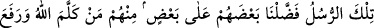
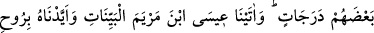
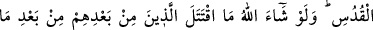
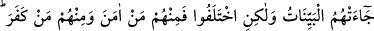
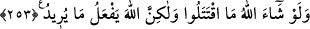

atılan taşı, hevâ-yı nefsin miğferinin kenarına isâbet ettirdi. Böylece miğfer yere düşüp
kalbteki faydasız pek çok haslet çıkıp gitti. Bunun akabinde nefsin sıfat ve ahlâkından
otuz tanesini daha öldürdü. Allah Teâlâ da şeytanlardan ve onların hiziplerinden
müteşekkil arta kalan orduyu hezimete uğrattı.
“Allah ona hükümdarlık ve hikmet verdi.” Yâni kalb Dâvud’una, hilafet
hükümdarlığını ve Rabbanî ilhâmlar hikmetini verdi. Ve ona, Kur’an’ın hakikat, esrâr
ve işâretlerinden dilediğini öğretti.
“Eğer Allah, insanların bir kısmıyla diğerlerini savmasıydı” âyetinde şuna işâret
vardır: Eğer Allah, taleb erbâbını, Allah’a vâsıl olmuş meşâyih vasıtasıyla seyr ü süluk
yoluna sokmasaydı, onların, kavîm olan dinin kemâlatını, nefs Câlût’unun ve onun
ordular halindeki kötü sıfatlarının istilâsından korumak ve yine bunların, ruh
beldelerini, ahlâksızlık, bulanıklık ve hayvânî sıfatlarla harâb etmelerini engellemek
üzere ahsen-i takvîm üzere yaratılan istîdâd ve kabiliyetleri bozulurdu.
“Fakat Allah, bütün âlemlere karşı lûtuf sahibidir.” Yâni fazl ve rahmetinin
kemâlinden, tâliplerin talep zincirini hareket ettirip onlara, kâmîl şeyhlerin irâdesiyle
sırlar ilham eder. Böylece onların, şeyhlerinin tasarruf ve terbiyeleri altında yetişip
mücâdelelere karşı sabır ve sükûn sahibi olmalarını ister. Şeyhlere, müridlerine karşı
ilgi gösterip onları huzûrlarına kabûl etmelerine ve şiddetli muhâlefetlere karşı onlara
güç takviyesinde bulunmalarına işâret buyurur. Eğer Allah Teâlâ’dan bu tarzda lütuflar
olmasaydı onlar, asla nefislerini tezkiye edemezlerdi.
Bu işâret ancak ehl-i hayırdan olanlar için tahakkuk eder, başkaları için değil. Bu
sebeple Allah Teâlâ habibi Hz. Muhammed (a.s.)’ı seçmiş, onun nefsini temizleyerek
hakikâte erdirmiş ve şöyle buyurmuştur: “İşte bu âyetlerin içinde pek çok hakikatler ve
incelikler vardır. Biz onları, hâkikatleri üzere senin önüne açıyoruz. Ve sen, bütün
makamları geçen, ahvâl ve kerâmetleri müşâhede eden peygamberlerdensin.” et-
Te’vilatü’n-Necmiyye’de bu açıklamalar yapılmıştır.
253. O peygamberlerin bir kısmını diğerlerinden üstün kıldık. Allah onlardan bir
kısmı ile konuşmuş, bazılarını da derece derece yükseltmiştir. Meryem oğlu İsa’ya
açık mûcizeler verdik ve onu Rûhu’l-Kudüs ile güçlendirdik. Allah dileseydi o
peygamberlerden sonra gelen milletler, kendilerine açık deliller geldikten sonra